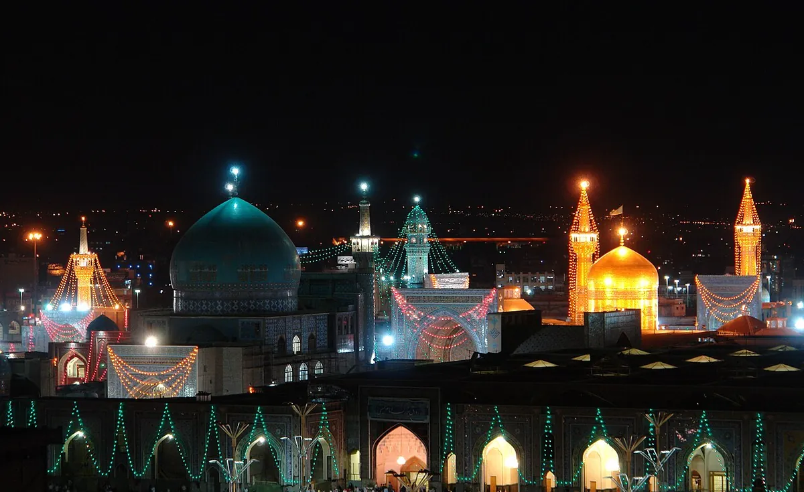

خدمات حسب احتياجك
رحلتك إلى مشهد،
بتفاصيل أوضح.
الإجابة المختصرة
تختلف الخدمات المناسبة لكل رحلة إلى مشهد بحسب عدد المسافرين وموعد الوصول والأولويات. يمكنك مشاركة هذه التفاصيل للاستفسار عن خيارات الاستقبال والتنقل داخل المدينة، ومقارنة أنواع الإقامة ومناطقها وفق احتياجاتك؛ وتُناقش مسبقاً الخدمات التي يمكن تنسيقها، من دون افتراض توافرها تلقائياً.

لا تحتاج كل رحلة إلى الخدمات نفسها. أخبرني بعدد المسافرين وموعد الوصول وما يهمك، لنتفق على ما يمكن تنسيقه قبل السفر. التواصل معي مباشر عبر واتساب، والتفاصيل تُؤكد كتابياً قبل أي التزام.
الاستقبال والتنقل
خيارات الوصول من مطار مشهد إلى الحرم والتنقل داخل المدينة بحسب احتياجك.
دليل المطار ↙الإقامة قرب الحرم
مقارنة خيارات الإقامة القريبة من حرم الإمام الرضا قبل الحجز.
مقارنة الفنادق ↙التنسيق الصحي
الاستفسار عن المستشفيات والمواعيد عند الحاجة إلى رعاية طبية.
السياحة العلاجية ↙برنامج زيارة الحرم
ما ينبغي معرفته قبل زيارة حرم الإمام الرضا وآداب الزيارة.
دليل الزيارة ↙ميزانية الرحلة
عناصر التكلفة التي ينبغي حسابها قبل السفر إلى مشهد.
دليل التكلفة ↙من العراق والخليج
خطوات التخطيط للقادمين من العراق ودول الخليج.
دليل الوصول ↙ماذا تشمل المساعدة عملياً؟
الهدف أن تصل إلى مشهد وأنت تعرف ما الذي يمكن تنسيقه مسبقاً وما الذي يُؤكد عند الوصول. نطاق الخدمة يُكتب بوضوح قبل أي دفع:
- الاستقبال والتنقل: ترتيب الوصول من مطار مشهد إلى مكان الإقامة أو منطقة الحرم حسب الوقت وعدد المسافرين. راجع أيضاً دليل المطار.
- الإقامة: المساعدة في فهم خيارات القرب من الحرم والمعايير العملية قبل الحجز. قارن عبر فنادق قرب الحرم.
- برنامج الزيارة: ترتيب أيام مرنة لزيارة حرم الإمام الرضا والراحة، مع احترام ظروفك الصحية والعائلية. انظر دليل الزيارة ونموذج 3 أيام.
- التنسيق الصحي: عند الحاجة إلى مراجعة طبية، المساعدة في الاستفسار والتواصل الأولي دون ادعاء نتائج علاجية. راجع السياحة العلاجية.
كيف نبدأ؟
أرسل عبر واتساب: تاريخ الوصول التقريبي، عدد المسافرين، بلد المغادرة، وما يهمك (إقامة، استقبال، زيارة، أو تنسيق صحي). أردّ عليك بنطاق ما يمكن تنسيقه وما يحتاج تأكيداً، والسعر إن وُجد، قبل أي التزام. تعرّف عليّ في عن حسين.
ما الذي لا أعد به؟
لا أعد بنتائج تأشيرة أو مواعيد طبية مضمونة أو أسعار فنادق ثابتة على الموقع. الشفافية أهم من ملء الصفحة بوعود. كل تفصيلة مهمة تُؤكد كتابةً.
الخدمات ليست حجزاً مؤكداً بمجرد إرسال الطلب. يُوضح نطاق الخدمة والسعر والتوفر كتابةً قبل أي اتفاق أو دفع.
أسئلة شائعة
هل الحجز يتم بمجرد إرسال رسالة واتساب؟
لا. الرسالة بداية حوار. يُوضح نطاق الخدمة والتوفر والسعر كتابةً قبل أي اتفاق أو دفع.
هل تقدم خدمة للزوار من العراق والخليج ولبنان؟
نعم، التركيز على الزائر العربي عموماً، مع أولوية عملية للقادمين من العراق ثم الخليج وباقي الدول العربية.
هل تشمل الخدمات السياحة العلاجية؟
يمكن المساعدة في الاستفسار والتنسيق الأولي عند الحاجة الطبية، دون ادعاء نتائج علاجية أو ضمان مواعيد. التفاصيل في صفحة السياحة العلاجية.
عن الأسعار في هذا الدليل
الأرقام المذكورة بالدولار الأمريكي، وهي نطاقات استرشادية جمعناها من مواقع حجز وسفر منشورة علناً. ولأن الأسعار تتغير بشدة بحسب الموسم وسعر الصرف وتوفر الغرف والمقاعد، نؤكد لك السعر الحالي عند التواصل بحسب تاريخ سفرك وعدد المسافرين، ونوضح ما يشمله وما لا يشمله قبل أي التزام.
ننصحك بالمقارنة: اطلب عروضاً من أي مقدّم خدمة آخر في مشهد، ثم قارنها بعرضنا من حيث السعر النهائي ووضوح التفاصيل وجودة الخدمة. نثق أنك ستجد عندنا خدمة أكثر إنصافاً وجودة، ونرحب بأن تحكم بنفسك. واطلب دائماً تأكيد السعر والتفاصيل كتابةً قبل الدفع.
الأسئلة الشائعة
ما الخدمات التي يمكن الاستفسار عنها؟
يمكن الاستفسار عن تنسيق الزيارة والتنقل والإقامة وترتيبات الرحلة وبعض احتياجات التواصل الصحي. تُؤكد تفاصيل كل خدمة وتوفرها وتكلفتها قبل الاتفاق.
كيف أطلب تنسيقاً يناسب رحلتي؟
أرسل موعد السفر التقريبي وعدد المسافرين ومدينة الوصول واحتياجاتك الأساسية عبر واتساب لتحديد التفاصيل التي يلزم التحقق منها.
هل إرسال الطلب يعني تأكيد الحجز؟
لا. إرسال الاستفسار لا يعني وجود حجز أو ضمان للتوفر؛ يجب تأكيد التفاصيل والسعر والشروط مباشرة قبل الدفع أو الالتزام.